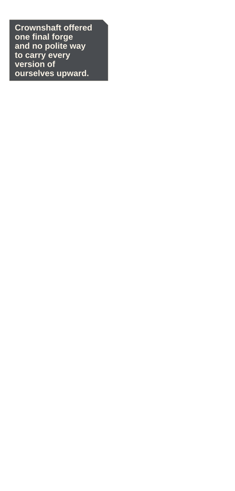
Beat and source
The Crownshaft forge hangs beside a seemingly endless ivory lift spine, with the Bell Regent's yoke far above.
experiments/reimaginings/ember-lattice/volume/ch09/source/p001.pngEMBER LATTICE · OWNER REVIEW · PHONE
24 continuous panels · 12 action · 348 dialogue words · 4 system moments
Phone reader · Full-size reader · Compact review · Action strip · Diagnostics

The Crownshaft forge hangs beside a seemingly endless ivory lift spine, with the Bell Regent's yoke far above.
experiments/reimaginings/ember-lattice/volume/ch09/source/p001.png
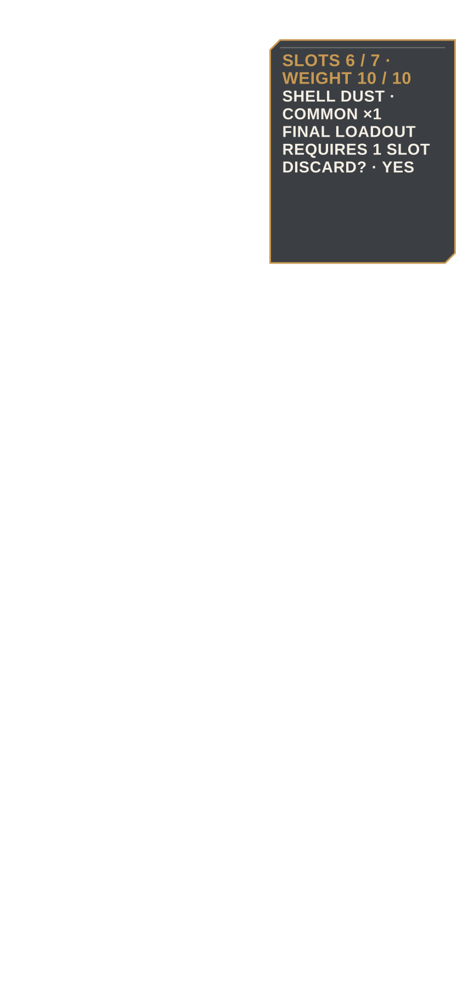
Inventory shows relic ingredients, damaged Survey Bracer, obsolete Shell Dust, no filters, and the missing route token.
experiments/reimaginings/ember-lattice/volume/ch09/source/p002.png
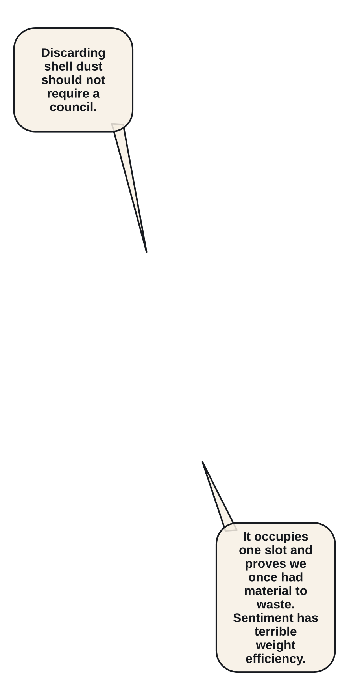
Elian discards the inert Shell Dust to free the slot required for a final-floor loadout.
experiments/reimaginings/ember-lattice/volume/ch09/source/p003.png
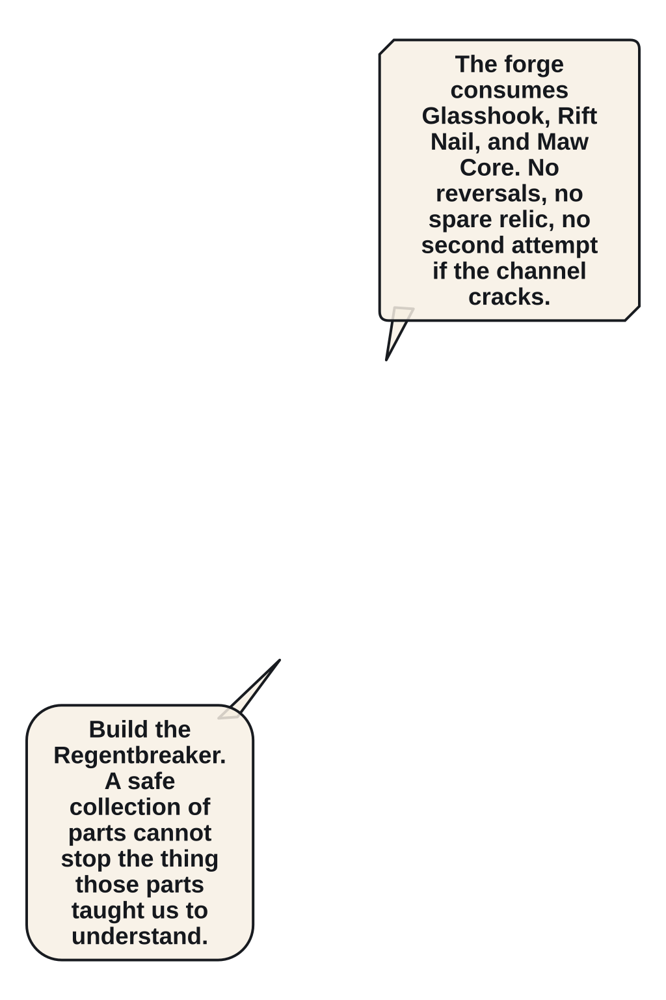
Orin proposes a single irreversible forge: one weapon strong enough for the Regent or several parts safe enough to sell.
experiments/reimaginings/ember-lattice/volume/ch09/source/p004.png
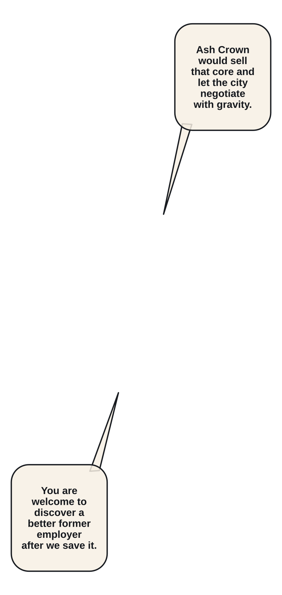
Glasshook, Rift Nail, and Brass Maw Core combine into the dark Relic Regentbreaker Edge.
experiments/reimaginings/ember-lattice/volume/ch09/source/p005.png
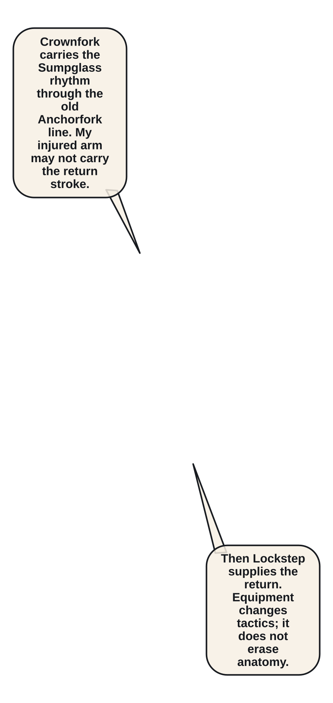
Anchorfork, Sumpglass Coil, and Tuning-Fork Key combine into Mira's pale Crownfork Spear.
experiments/reimaginings/ember-lattice/volume/ch09/source/p006.png
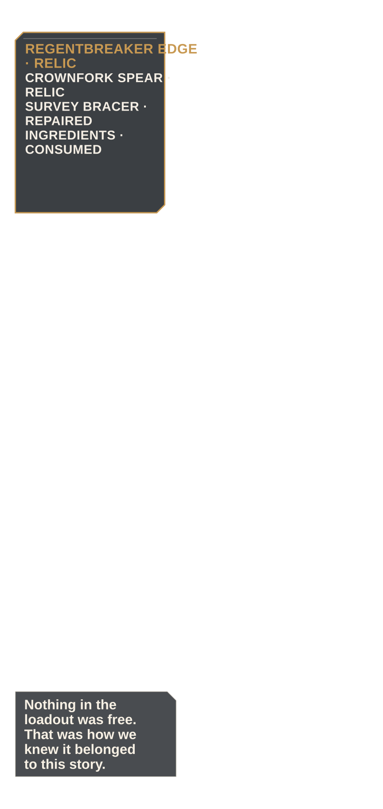
A loadout comparison shows consumed ingredients, repaired Survey Bracer, rebuilt compact Kiln Satchel, and both Relic weapons.
experiments/reimaginings/ember-lattice/volume/ch09/source/p007.png
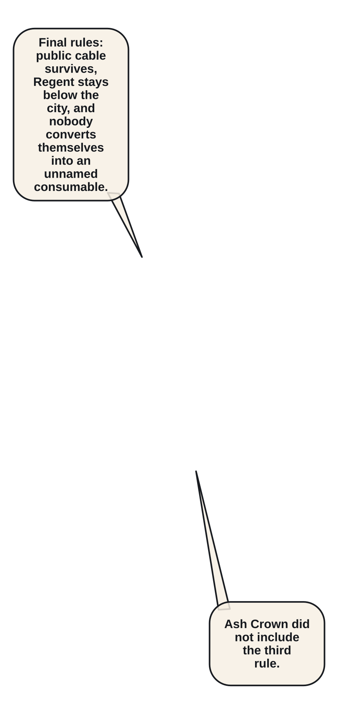
Crownshaft Assault opens beside L7 170/320 XP, party trust, and the public-lift survival condition.
experiments/reimaginings/ember-lattice/volume/ch09/source/p008.png
The four adults ascend a narrow platform along the Crownshaft cable with three branching guard rails above.
experiments/reimaginings/ember-lattice/volume/ch09/source/p009.png
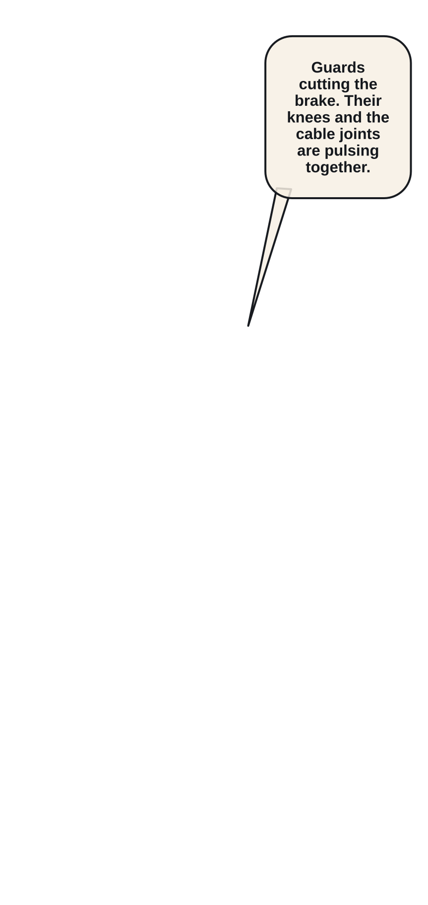
Ivory Crown Guards drop onto the upper rail and cut the lift brake line.
experiments/reimaginings/ember-lattice/volume/ch09/source/p010.png
Elian completes his tenth verified read on the guards' linked knee and cable faults.
experiments/reimaginings/ember-lattice/volume/ch09/source/p011.png
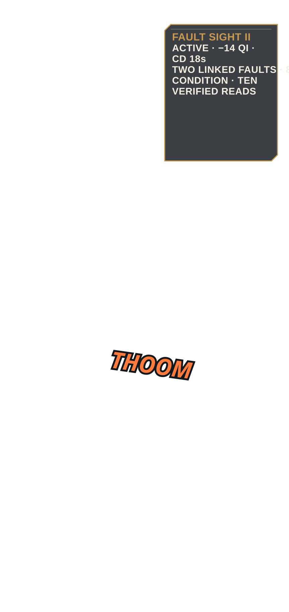
Fault Sight II replaces rank I with two linked faults, 14 Qi cost, 18s cooldown, and eight-second duration.
experiments/reimaginings/ember-lattice/volume/ch09/source/p012.png
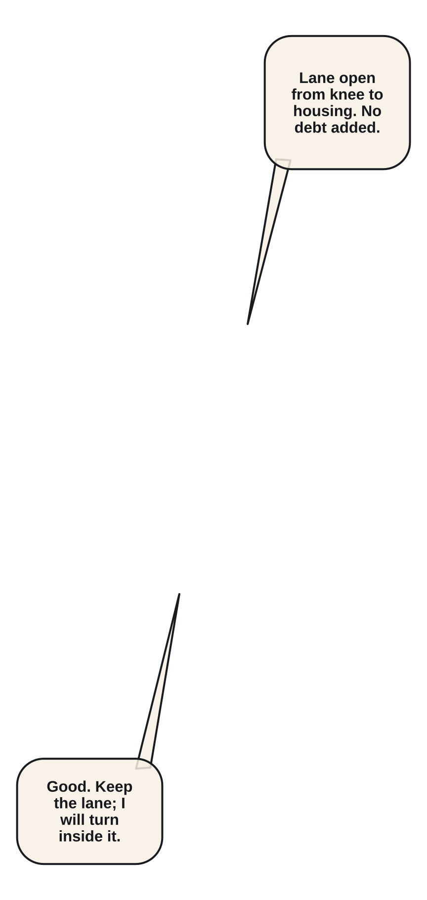
Elian marks knee and cable while Sable cuts a safe movement lane between them.
experiments/reimaginings/ember-lattice/volume/ch09/source/p013.png
Fault Step II pivots from the guard knee to the severed brake housing.
experiments/reimaginings/ember-lattice/volume/ch09/source/p014.png
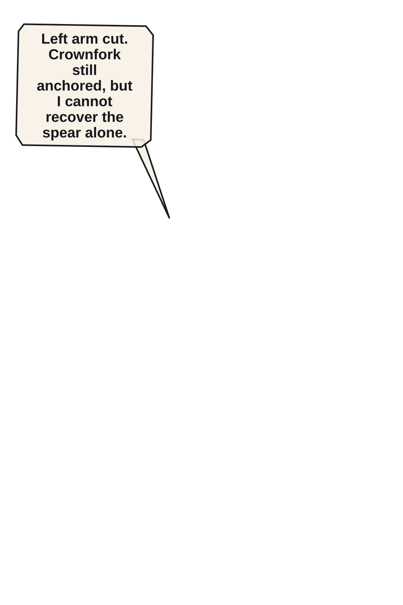
A guard blade cuts Mira's left upper arm before she can anchor the Crownfork.
experiments/reimaginings/ember-lattice/volume/ch09/source/p015.png
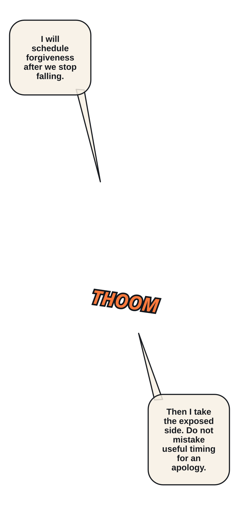
Sable takes Mira's exposed side without asking for forgiveness or command.
experiments/reimaginings/ember-lattice/volume/ch09/source/p016.png
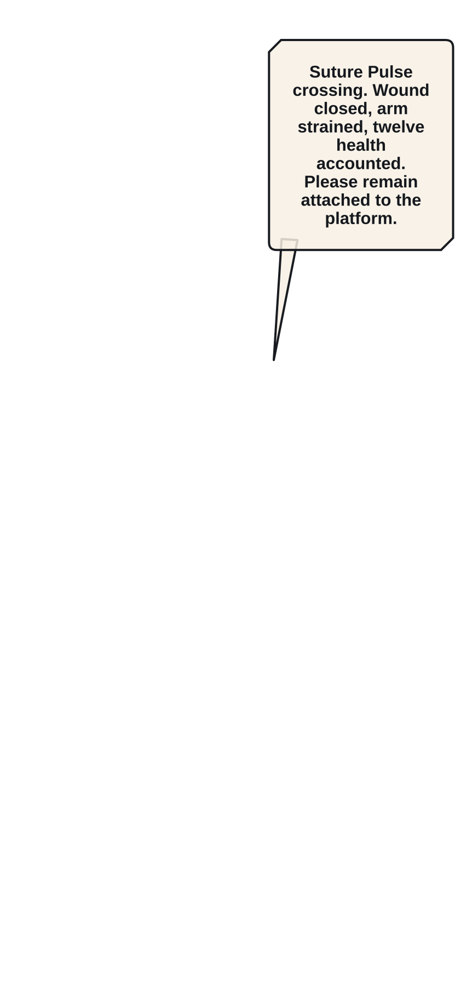
Orin's rebuilt Kiln Satchel powers Suture Pulse and closes the fresh arm wound without erasing strain.
experiments/reimaginings/ember-lattice/volume/ch09/source/p017.png
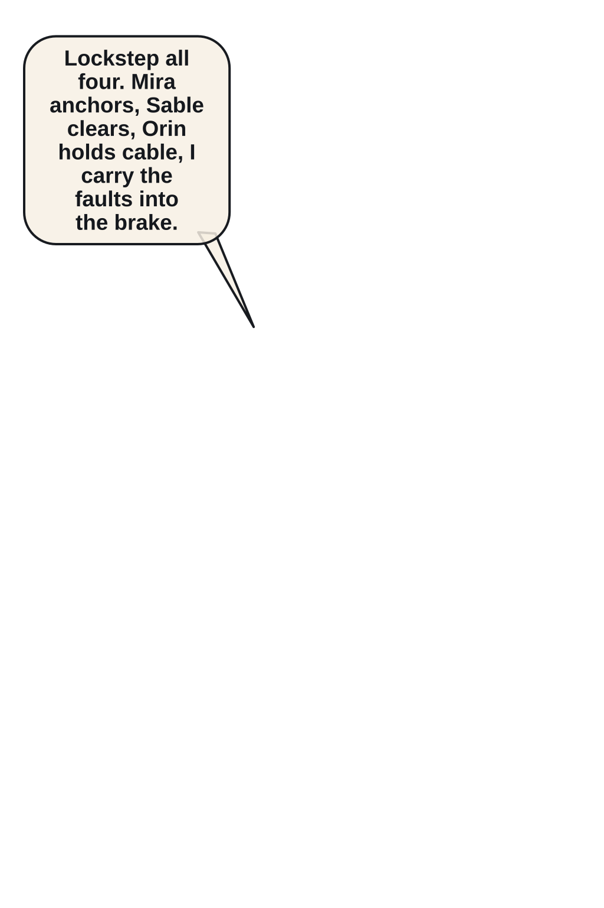
Mira binds Elian and Sable into Lockstep Brace as the platform drops.
experiments/reimaginings/ember-lattice/volume/ch09/source/p018.png
Fault Bastion: Crosslock drives linked faults into the brake housing and throws the guards clear of the lift.
experiments/reimaginings/ember-lattice/volume/ch09/source/p019.png
The platform catches on one cable; Mira's arm hangs bound while the public lift remains far below.
experiments/reimaginings/ember-lattice/volume/ch09/source/p020.png
Guard XP and ascent progress bring Elian to 300/320 without an early level-up.
experiments/reimaginings/ember-lattice/volume/ch09/source/p021.png
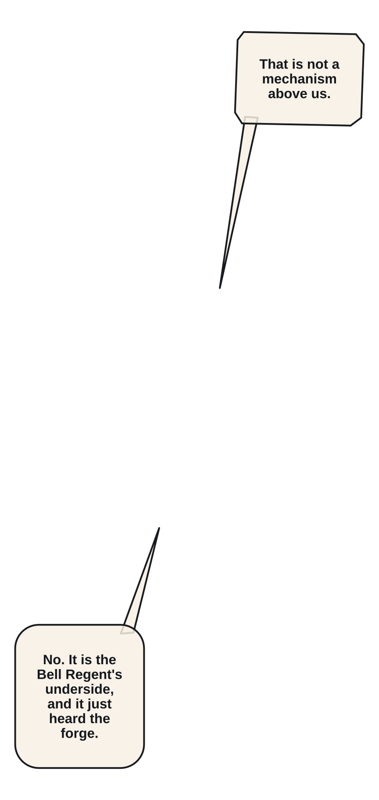
The Crownshaft cap opens and reveals the underside of the enormous Bell Regent.
experiments/reimaginings/ember-lattice/volume/ch09/source/p022.png
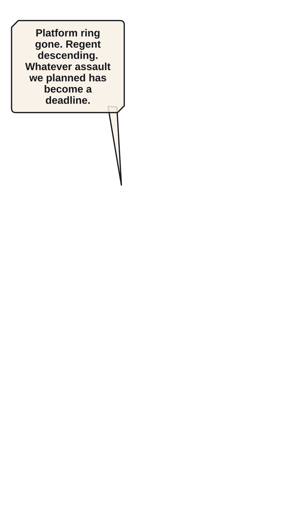
The Regent wakes early and tears one complete platform ring from the shaft.
experiments/reimaginings/ember-lattice/volume/ch09/source/p023.png
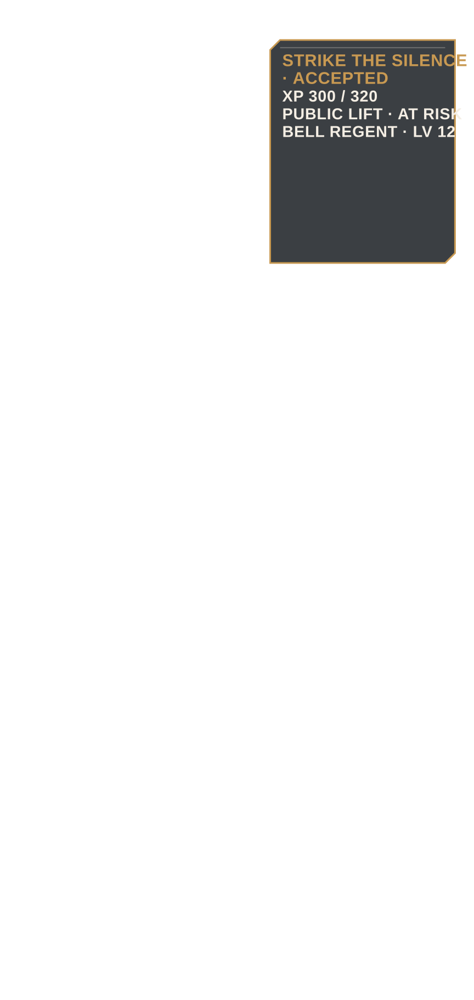
Strike the Silence replaces the incomplete assault: defeat the Regent before it reaches the public lift.
experiments/reimaginings/ember-lattice/volume/ch09/source/p024.png